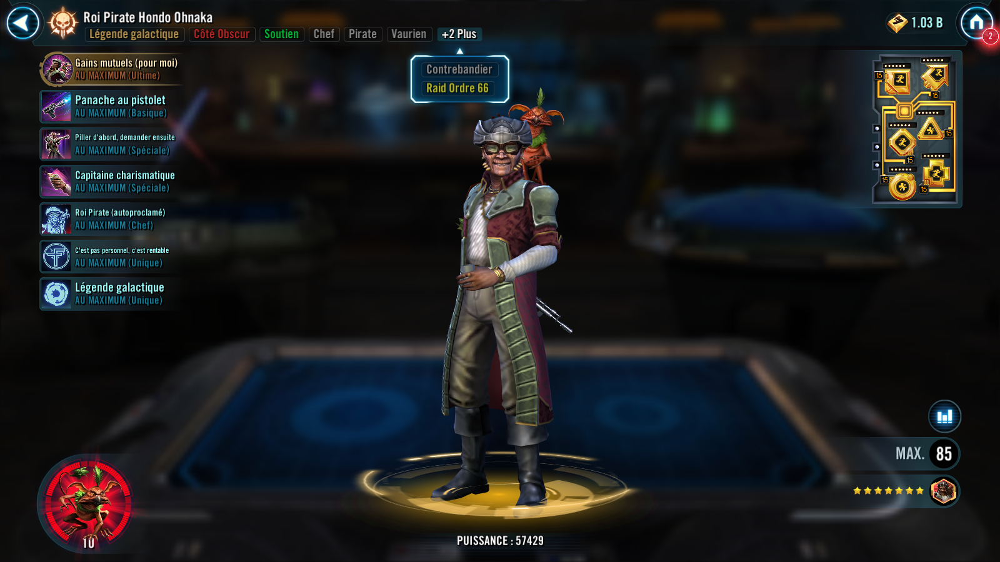
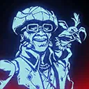

Pirate King Hondo Ohnaka
A cunning pirate and master manipulator whose silver tongue and shifting loyalties turned chaos into opportunity across every galactic conflict
A cunning pirate and master manipulator whose silver tongue and shifting loyalties turned chaos into opportunity across every galactic conflict

Requires 100% Ultimate Charge to activate.
Ultimate Charge: Pirate King Hondo Ohnaka gains 1% Ultimate Charge whenever a Pirate ally gains a stack of Profit and 2% Ultimate Charge whenever a Pirate ally uses an ability that Steals buffs.
All Pirate and Smuggler allies are revived with 100% Health. All enemies lose 25% Turn Meter, doubled for Jedi and Sith, which can't be resisted. Jedi and Sith enemies also have their cooldowns increased by 2. Enemies gain Critical Damage Up, Defense Up, and Offense Up for 2 turns.
Pirate King Hondo then inflicts Tenuous Agreement on all enemies for 2 turns, which can't be copied, dispelled, evaded, or resisted, and grants Favorable Terms to all Pirate allies for 2 turns, which can't be copied, dispelled, or prevented.
Tenuous Agreement: +10 Speed; deal 30% less damage to characters with Favorable Terms
Favorable Terms: +20% Critical Chance and Offense; recover 10% Protection at the start of this character's turn; gain a bonus turn and grant allied Pirate King Hondo Ohnaka 2 stacks of Profit when defeating an enemy with Tenuous Agreement
Whenever an enemy damages a character with Favorable Terms, they are inflicted with one stack of Off Balance for 2 turns, which can't be evaded, and Pirate King Hondo Ohnaka gains 2 stacks of Profit.
Deal Physical damage to target enemy and gain 1 stack of Profit. If this ability scores a critical hit, all Pirate allies also gain a stack of Profit.
If it is Pirate King Hondo Ohnaka's turn, call a random Pirate Attacker and a random other Pirate ally to assist dealing 2% more damage for each stack of Profit on all 3 allies and if the target enemy is Jedi or Sith, remove 2% Turn Meter for each buff and debuff on them. If any Turn Meter was removed, Hondo gains 3% Ultimate Charge.
If Pirate King Hondo had 10 or more stacks of Profit at the start of his turn, this ability is guaranteed to critically hit if able.
All Pirate allies gain 10 Mastery (stacking) until the end of the encounter.
Pirate King Hondo Ohnaka Steals all buffs (excluding taunt effects) from the target enemy, resets their duration, and grants all buffs on himself (excluding Stealth and taunt effects) to all Pirate allies. Then he inflicts the opposite debuff, if any, on the target enemy for 2 turns, dispels any remaining buffs on them, and increases their cooldowns by 1.
This ability can't be resisted.
Dispel all debuffs from all allies and all Pirate allies recover 30% Health and Protection and gain 25% Turn Meter. If Pirate King Hondo Ohnaka has 10 or more stacks of Profit, consume 10 of them and all Pirate allies instead gain 75% Turn Meter and Speed Up for 2 turns.
Call all other Pirate allies to assist, and if Hondo consumed stacks of Profit with this ability, call all other Pirate allies to assist again.

At the start of battle, all Pirate allies and all Smuggler allies gain 30% Offense and 3% Speed. Pirate allies also gain 35% Defense and 25% Tenacity and are immune to Fear, Healing Immunity, Shock, and Turn Meter removal. If there are no Light Side allies, all Pirates gain Lightning Raid for 1 turn, increased to 2 turns if the enemy in the Leader slot is a Jedi.
Pirate King Hondo Ohnaka gains 2% Ultimate Charge whenever a Pirate ally uses an ability that Steals buffs.
At the start of Hondo's turn, if there are Sith enemies, Daze them for 2 turns, which can't be dispelled, evaded, or resisted.
If the enemy in the Leader slot is a Jedi, Pirate allies gain 10% Offense and 4% Speed. Whenever an enemy Jedi attacks out of turn, they take damage equal to 3% of their Max Health and all Pirate allies gain 2% Offense (stacking) for the rest of battle, this damage can't be evaded and can't defeat enemies.
Lightning Raid: Deal 20% more damage and can ignore Taunt
The maximum cap for Profit is removed for Pirate King Hondo Ohnaka.
At the start of battle, if Pirate King Hondo Ohnaka is in the Leader slot, all Pirate allies gain 5 stacks of Profit. Hondo gains an additional 2 stacks of Profit for each Relic Amplifier level he has (max 9 levels).
Whenever an allied Pirate attacks out of turn, they gain a stack of Profit. Whenever Pirate allies are damaged by a Jedi or Sith enemy, they gain a stack of Profit. Whenever Pirate King Hondo Ohnaka uses a Special ability, all Pirate allies gain 2 stacks of Profit.
While Pirate allies have 15 or more stacks of Profit they receive 10% less damage, and while they have less than 15 stacks of Profit they gain 10% Turn Meter for each turn an enemy takes.

This unit takes reduced damage from percent Health damage effects and massive damage effects. They take massive damage from destroy effects (excludes raid bosses) and are immune to stun effects.
This unit has +10% Max Health and Max Protection per Relic Amplifier level, and damage they receive is decreased by 30%.